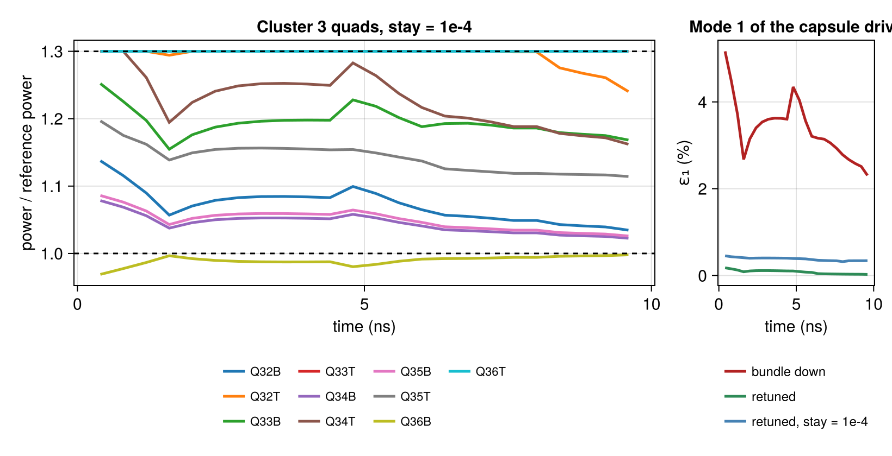

Retuning a drive to a reference shot
A shot that worked is the reference for the next one. When the next one cannot repeat it exactly (a bundle is down, a quad's amplifiers cannot reach the power they gave before, a backlighter takes a bundle from the drive), the question is how to set the remaining beams' powers, at every moment of the pulse, so that the capsule sees the drive it saw before: the same level and the same low-mode shape through time.
This tutorial builds a reference shot from a total laser power and a cone fraction against time (the way NIF pulses are written), drops a bundle, and retunes the other 46 quads' power histories to match the reference's capsule drive, mode by mode through $l = 4$, within each quad's power limit. It introduces cone_fraction_pulses, pulse tables (write_pulse_table, read_pulse_table), drive histories that keep their albedos, and retune_drive.
using Briareus
using CairoMakie
using Printf
CairoMakie.activate!(type = "png", px_per_unit = 2)
set_theme!(fontsize = 15, linewidth = 2.5)The reference shot
The NIF-like hohlraum of the other tutorials (10.1 × 5.75 mm, 3.1 mm entrance holes, a 0.9 mm capsule) with a gold wall that loses energy into the Marshak wave (WallLossAlbedo: the albedo rises through the pulse), at a coarse mesh to keep the tutorial quick. The 48 quads are pointed as in Freeing a bundle for radiography.
target = hohlraum(length = 10.1, radius = 2.875, leh_radius = 1.55, capsule_radius = 0.9,
wall = Material(:Au; albedo = WallLossAlbedo(), conversion = 0.8),
h = 0.45, capsule_h = 0.12)
pointing = Dict(:outer50 => (0.0, 5.01), :outer44 => (0.0, 5.20),
:inner30 => (0.60, 3.63), :inner23 => (1.09, 3.09))
function aimed(b)
r, z = pointing[b.group]
φ = port_angles(b)[2]
return remake(b; aim = (-r * cosd(φ), -r * sind(φ), sign(b.port[3]) * z))
end
quads = aimed.(nif_quads())48-element Vector{Beam{Float64}}:
Beam(Q15T, θ=23.50°, φ=78.75°, 8 TW, aim=(-0.2126, -1.069, 3.09), defocus=0 mm)
Beam(Q42T, θ=23.50°, φ=168.75°, 8 TW, aim=(1.069, -0.2126, 3.09), defocus=0 mm)
Beam(Q33T, θ=23.50°, φ=258.75°, 8 TW, aim=(0.2126, 1.069, 3.09), defocus=0 mm)
Beam(Q24T, θ=23.50°, φ=348.75°, 8 TW, aim=(-1.069, 0.2126, 3.09), defocus=0 mm)
Beam(Q13T, θ=30.58°, φ=34.33°, 8 TW, aim=(-0.4955, -0.3384, 3.63), defocus=0 mm)
Beam(Q41T, θ=30.00°, φ=123.75°, 8 TW, aim=(0.3333, -0.4989, 3.63), defocus=0 mm)
Beam(Q36T, θ=30.58°, φ=214.33°, 8 TW, aim=(0.4955, 0.3384, 3.63), defocus=0 mm)
Beam(Q26T, θ=30.00°, φ=303.75°, 8 TW, aim=(-0.3333, 0.4989, 3.63), defocus=0 mm)
Beam(Q14T, θ=44.50°, φ=16.29°, 8 TW, aim=(-0, -0, 5.2), defocus=0 mm)
Beam(Q12T, θ=44.50°, φ=62.46°, 8 TW, aim=(-0, -0, 5.2), defocus=0 mm)
⋮
Beam(Q22B, θ=135.50°, φ=343.71°, 8 TW, aim=(-0, 0, -5.2), defocus=0 mm)
Beam(Q16B, θ=150.00°, φ=56.25°, 8 TW, aim=(-0.3333, -0.4989, -3.63), defocus=0 mm)
Beam(Q44B, θ=149.42°, φ=145.67°, 8 TW, aim=(0.4955, -0.3384, -3.63), defocus=0 mm)
Beam(Q31B, θ=150.00°, φ=236.25°, 8 TW, aim=(0.3333, 0.4989, -3.63), defocus=0 mm)
Beam(Q21B, θ=149.42°, φ=325.67°, 8 TW, aim=(-0.4955, 0.3384, -3.63), defocus=0 mm)
Beam(Q15B, θ=156.50°, φ=11.25°, 8 TW, aim=(-1.069, -0.2126, -3.09), defocus=0 mm)
Beam(Q42B, θ=156.50°, φ=101.25°, 8 TW, aim=(0.2126, -1.069, -3.09), defocus=0 mm)
Beam(Q33B, θ=156.50°, φ=191.25°, 8 TW, aim=(1.069, 0.2126, -3.09), defocus=0 mm)
Beam(Q24B, θ=156.50°, φ=281.25°, 8 TW, aim=(-0.2126, 1.069, -3.09), defocus=0 mm)The reference pulse is a total power (a picket, a foot, a second step and a 420 TW peak) and a cone fraction, the inner cones' share of it, that falls from 0.35 in the foot to 0.25 at the peak. cone_fraction_pulses turns them into each cone's power per quad; write_pulse_table writes them as CSV, the form a reference shot's requested or measured powers come in:
tt = [0.0, 0.3, 1.0, 1.4, 4.5, 5.0, 6.0, 7.5, 9.5, 10.0]
total = [0.0, 60.0, 60.0, 15.0, 15.0, 50.0, 50.0, 420.0, 420.0, 0.0]
fraction = [0.35, 0.35, 0.35, 0.35, 0.33, 0.30, 0.30, 0.25, 0.25, 0.25]
reference_pulses = cone_fraction_pulses(quads, tt, total, fraction)
pulse_file = write_pulse_table(joinpath(mktempdir(), "reference.csv"), reference_pulses)
print(read(pulse_file, String)[1:300], "…\n")time_ns,inner23,inner30,outer44,outer50
0,0,0,0,0
0.3,1.3125,1.3125,1.21875,1.21875
1,1.3125,1.3125,1.21875,1.21875
1.4,0.328125,0.328125,0.3046875,0.3046875
4.5,0.309375,0.309375,0.3140625,0.3140625
5,0.9375,0.9375,1.09375,1.09375
6,0.9375,0.9375,1.09375,1.09375
7.5,6.5625,6.5625,9.84375,9.84375
9.…The reference drive is a drive_history of the shot, which solves the radiosity at each time with the albedos the wall has then. With ylm = true it keeps the capsule flux's real spherical harmonics, and with keep_albedo = true each step's converged albedos: together, the target drive and the state to linearize about.
model = RadiationModel(target; closed = true)
op = DepositionOperator(target, quads)
times = 0.4:0.4:9.6
reference = drive_history(model, op, τ -> with_pulses(quads, reference_pulses, τ), times;
lmax = 4, ylm = true, keep_albedo = true)
@printf("capsule Tᵣ at the peak: %.0f eV; wall albedo from %.2f to %.2f\n", maximum(reference.Tr),
extrema(reference.wall_albedo)...)capsule Tᵣ at the peak: 293 eV; wall albedo from 0.65 to 0.91A bundle down
Bundle 31 (quads Q31T and Q31B, one in each hemisphere) is not available. With the same pulses on the other 46 quads, the capsule loses some drive and gains a mode-1 asymmetry, a flux difference between its sides toward and away from the missing ports. The deposition operator of the remaining quads is the reference's restricted to them:
keep = findall(b -> nif_bundle(b) != "31", quads)
kept = quads[keep]
op_kept = op[keep]
dropped = drive_history(model, op_kept, τ -> with_pulses(kept, reference_pulses, τ),
reference.time; lmax = 4, ylm = true)
ε(h, l) = [100 * mode_amplitude(h.ylm[:, k], l) for k in eachindex(h.time)]
peak(h, x) = (k = findall(t -> 7.6 <= t <= 9.4, h.time); sum(x[k]) / length(k))
@printf("bundle down: ε₁ %.2f%% at the peak (%.2f%% at most), Tᵣ %+.1f eV\n",
peak(dropped, ε(dropped, 1)), maximum(ε(dropped, 1)), peak(dropped, dropped.Tr .- reference.Tr))bundle down: ε₁ 2.70% at the peak (5.17% at most), Tᵣ -3.2 eVRetuning the quads
At any moment the capsule flux is linear in the beams' powers once the albedos are fixed, and the reference history says what the albedos are. So at each reference time retune_drive finds each quad's power that brings the capsule flux's shape $c_{lm}/c_{00}$ back to the reference's for $l = 1$–$4$ and its level $c_{00}$ back to the reference's: a least-squares problem with each quad's power between zero and its limit, here 1.3 times its cone's power per quad in the reference at that time.
nominal(k, τ) = reference_pulses[first(b.group for b in kept if Symbol(b.quad) == k)](τ)
limit(k, τ) = (0.0, 1.3 * nominal(k, τ) + 1e-9)
retuned = retune_drive(model, op_kept, kept, reference; by = :quad, limits = limit)
@printf("linear prediction: shape matched to %.1e, drive to %.1e (worst time)\n",
maximum(retuned.residual), maximum(abs.(retuned.drive .- 1)))linear prediction: shape matched to 4.6e-03, drive to 3.1e-04 (worst time)The prediction holds the albedos at the reference's; a drive history of the new pulses, where the albedos follow the new drive, is the check:
tuned = drive_history(model, op_kept, τ -> with_pulses(kept, retuned.pulses, τ; by = :quad),
reference.time; lmax = 4, ylm = true)
@printf("history against the prediction: c_lm/c₀₀ within %.1e\n",
maximum(abs.(retuned.shape .- tuned.ylm[1:25, :] ./ tuned.ylm[1:1, :])))history against the prediction: c_lm/c₀₀ within 5.0e-05The two agree to a few parts in 10⁵: the drive stays close enough to the reference's that the wall's albedos do not move. The retune takes the mode 1 out at every time and gives back the drive the bundle took:
println(" ε₁ peak ε₁ max ε₂ peak ε₄ peak ΔTᵣ peak")
for (label, h) in (("reference", reference), ("bundle down", dropped), ("retuned", tuned))
@printf(" %-12s %.3f%% %.3f%% %.3f%% %.3f%% %+.2f eV\n", label, peak(h, ε(h, 1)),
maximum(ε(h, 1)), peak(h, ε(h, 2)), peak(h, ε(h, 4)), peak(h, h.Tr .- reference.Tr))
end ε₁ peak ε₁ max ε₂ peak ε₄ peak ΔTᵣ peak
reference 0.000% 0.000% 10.201% 0.416% +0.00 eV
bundle down 2.695% 5.166% 9.995% 0.418% -3.24 eV
retuned 0.031% 0.177% 10.157% 0.471% -0.00 eVBut it gets there by using the limits: at the peak many quads run at 1.3 times their reference power and a few almost off. Many power sets restore the drive; with nominal (the reference's powers) and a weight stay, the retune prefers the one closest to the reference, trading a little of the match for smaller departures:
k_peak = findfirst(≈(8.8), reference.time)
println(" stay ε₁ peak ε₁ max powers / reference at 8.8 ns at the limit")
rows = Any[("unconstrained", 0.0, retuned, tuned)]
for stay in (1e-5, 1e-4, 1e-3)
r = retune_drive(model, op_kept, kept, reference; by = :quad, limits = limit, nominal, stay)
h = drive_history(model, op_kept, τ -> with_pulses(kept, r.pulses, τ; by = :quad),
reference.time; lmax = 4, ylm = true)
push!(rows, (@sprintf("%.0e", stay), stay, r, h))
end
for (label, stay, r, h) in rows
ratio = [r.power[g, k_peak] / nominal(key, r.time[k_peak]) for (g, key) in enumerate(r.keys)]
@printf(" %-12s %.3f%% %.3f%% %.2f–%.2f %d of %d\n", label,
peak(h, ε(h, 1)), maximum(ε(h, 1)), extrema(ratio)...,
count(>=(1.3 - 1e-6), ratio), length(ratio))
end stay ε₁ peak ε₁ max powers / reference at 8.8 ns at the limit
unconstrained 0.031% 0.177% 0.00–1.30 25 of 46
1e-05 0.129% 0.253% 0.78–1.30 7 of 46
1e-04 0.336% 0.453% 0.93–1.30 3 of 46
1e-03 1.314% 1.570% 1.00–1.18 0 of 46A small stay keeps most of the correction with only a few quads at their limit. Larger ones give back mode 1 for powers within about 15% of the reference's. The power histories of one design, as each quad's power over its reference power, for the other quads of the dropped bundle's cluster (quads Q3…):
r_stay = rows[3][3]
fig = Figure(size = (820, 420))
ax1 = Axis(fig[1, 1], xlabel = "time (ns)", ylabel = "power / reference power",
title = "Cluster 3 quads, stay = 1e-4")
ax2 = Axis(fig[1, 2], xlabel = "time (ns)", ylabel = "ε₁ (%)", title = "Mode 1 of the capsule drive")
cluster3 = sort(filter(g -> startswith(String(r_stay.keys[g]), "Q3"), eachindex(r_stay.keys));
by = g -> String(r_stay.keys[g]))
for (i, g) in enumerate(cluster3)
key = r_stay.keys[g]
lines!(ax1, r_stay.time, r_stay.power[g, :] ./ nominal.(key, r_stay.time); label = String(key),
color = Makie.to_colormap(:tab10)[i])
end
hlines!(ax1, [1.0, 1.3]; color = :black, linestyle = :dash, linewidth = 1.5)
for (label, h, c) in (("bundle down", dropped, :firebrick), ("retuned", tuned, :seagreen),
("retuned, stay = 1e-4", rows[3][4], :steelblue))
lines!(ax2, h.time, ε(h, 1); label, color = c)
end
Legend(fig[2, 2], ax2; orientation = :vertical, framevisible = false, labelsize = 12, tellheight = false, valign = :top)
Legend(fig[2, 1], ax1; orientation = :horizontal, nbanks = 3, framevisible = false, labelsize = 11)
fig
What this checks
- The per-time linear model is the drive history's own: the retuned pulses' history, with albedos that follow the drive, reproduces the predicted shape to a few parts in 10⁵ (the test suite checks 1e-4 on its own mesh).
- Each quad stays within its limits and the drive level within 0.1% of the reference's at every time (test suite), and the dropped bundle's mode 1 falls by more than an order of magnitude.
- Weighting the departure from the reference powers trades the match for smaller departures monotonically (test suite: a larger
stay, a smaller departure and a larger residual).
This page was generated using Literate.jl.